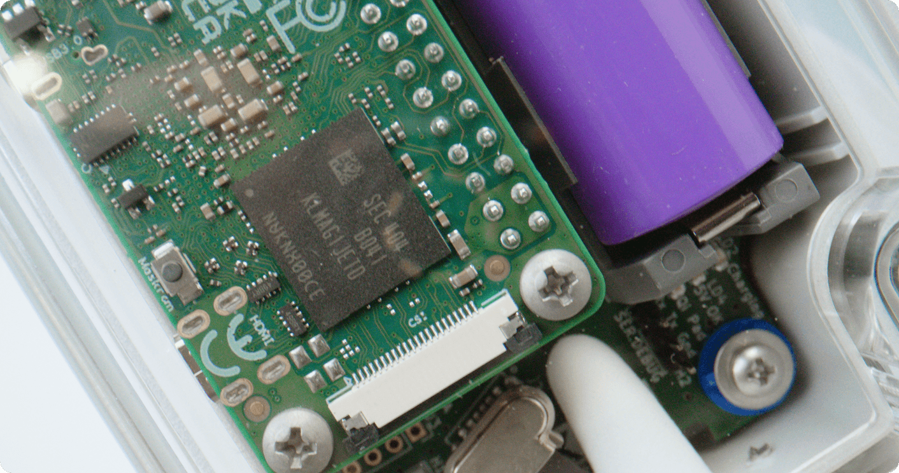

Milestones
Spearheading a new AI field which called Computer hearing, V2M creates a solution for on-board diagnostics using sound. The development of V2M can not only effectively find and detect malfunctions while driving, but also predict future breakdowns.
-
Spun-off from academic research, concept was transformed into a first prototype and the basis for a new innovative solution. V2M LLC incorporated.
$50kRaised capital
-
Following the successful build of the first working prototype, road testing began to refine the technology and prepare for broader deployment.
Patent for technology filed and pending. -
Software enhancements introduced a new method, while prototype upgrades simplified setup and reduced costs. V2M’s acoustic fault-localization method is patented in the United States.
-
Completed two pilot projects with automotive OEMs, expanded its team, initiated first MVP production, raised seed funding, and continued R&D in predictive diagnostics.
$200kRaised capital
-
Finished design and development of a software application for mobile, desktop. V2M One is ready and moved through product development in Q1, and began mass production in Q3. Three new partnerships with global clients in automotive industry
$500kRaised capital
-
Continuous product validation and improvement. Launch of initial B2B sales and onboarding of beta users. Further market expansion through a defined sales and marketing strategy
